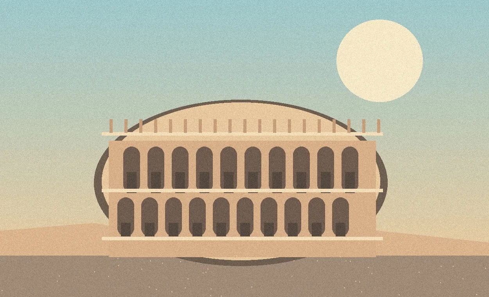
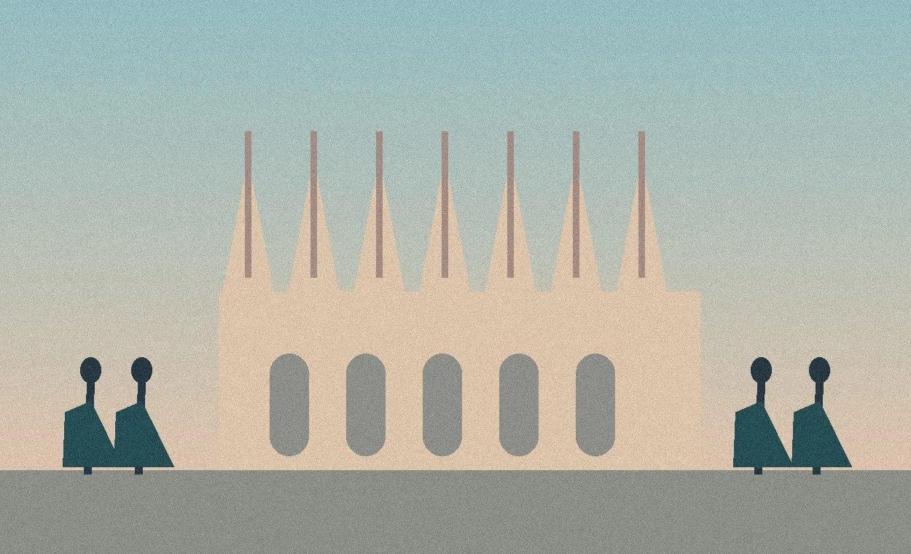
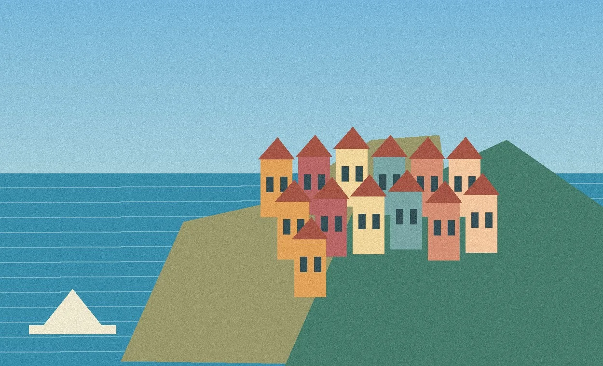

НАСЕЛЕНИЕ
58,94 млн
жителей на 1 января 2026 года
Страна гор, морей, великих городов и сильной промышленности.
Кратко о географическом положении, природных ресурсах, населении и хозяйстве. Изучайте объекты на карте и листайте презентацию прямо здесь.

Главные факты, которые стоит знать
жителей на 1 января 2026 года
полуостров, острова и Альпы
5 регионов с особой автономией
Франция, Швейцария, Австрия, Словения

Италия известна сложным машиностроением, модой и дизайном, пищевой продукцией, морской логистикой и туризмом. Основные промышленные районы сосредоточены на севере.
Географическое преимущество: выход к морям и европейским рынкам, но Альпы усложняют строительство дорог, а Юг развивается неравномерно.
Выберите тему: карта выделит главные объекты, маршруты и районы. Нажмите на любой маркер, чтобы прочитать пояснение.
На карте представлены ключевые географические объекты страны. Тематические зоны и отдельные линии показаны схематично — для учебного объяснения.
Перейти к презентации15 слайдов о географии Италии. Без упоминаний источников на слайдах, с удобным просмотром на телефоне или компьютере.
На телефоне перелистывайте слайды движением пальца. На компьютере используйте стрелки на клавиатуре.
Выгодное приморское положение, разнообразная природа, крупные промышленные центры и туризм делают Италию важной частью европейского хозяйства. Главные вызовы — старение населения и различия между Севером и Югом.
Вернуться к началу